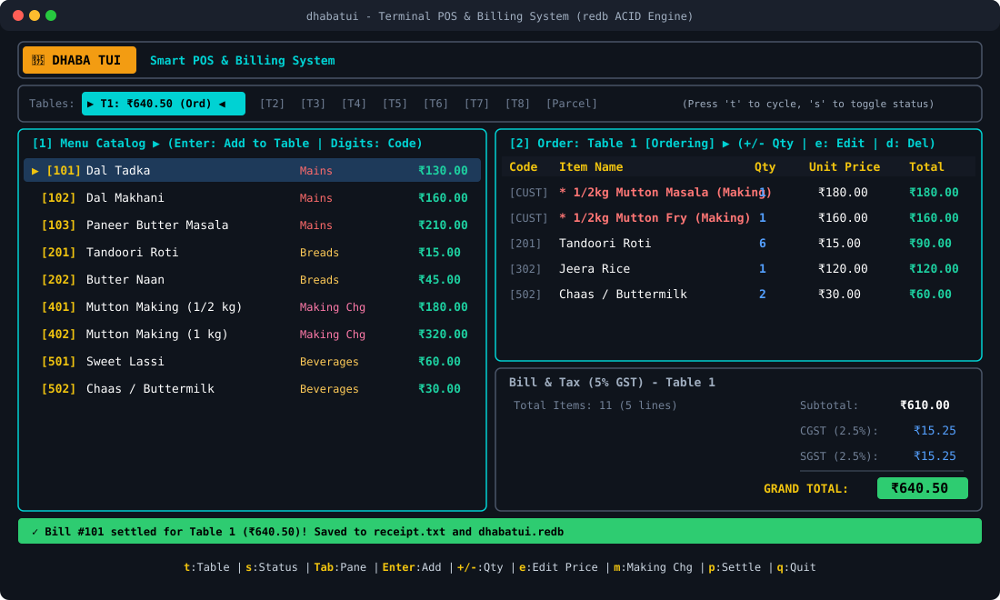
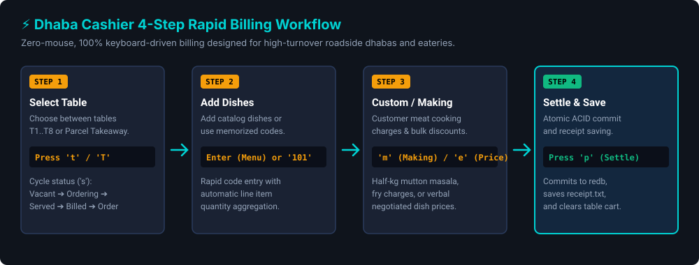

Never let power cuts, slow internet, or complicated software stall your cash counter. DhabaTUI is a lightweight billing app cashiers can operate with just their keyboard in under 5 seconds.

Built from the ground up to solve the real everyday frustrations of roadside restaurants.
No internet connection needed. No cloud subscriptions. If your Wi-Fi or broadband drops, your counter keeps billing without skipping a beat.
All calculations use exact integer Indian Paise (100 paise = ₹1.00) with half-up GST rounding. Eliminates computer floating-point drift so your cash drawer balances to the single rupee every night.
No mouse required. Cashiers memorize dish codes (like 101 for Dal Tadka) and punch an entire family order in under 5 seconds.
Instantly switch between 8 dining tables plus takeaway parcels with the t key. Switch focus between menu and cart with Tab. See occupied, vacant, and billed tables at a glance.
Highway dhabas often cook raw meat brought by guests. Easily punch on-the-fly custom cooking fees (e.g. 1/2kg Mutton Masala) with one button.
Kitchen staff and waiters can open their phone browser on your dhaba's local Wi-Fi to view active orders and kitchen tickets in real-time.
No programming knowledge or complicated database setup required.
Download the pre-built application package for your operating system (Windows, Mac, or Linux) from our downloads section.
Unzip the downloaded file onto your desktop or cash counter computer. No installers or drivers needed.
Double-click dti.exe (Windows) or run ./dti (Mac/Linux). The counter opens instantly and is ready for business.
A simple 4-step flow designed so any counter staff can master it in 5 minutes.

Choose your operating system. Free and open source under the MIT License.
Are you a Rust developer? You can also install via Cargo: cargo install dhabatui
Keep these shortcuts beside your counter screen for super-fast order entry.
| Key | Action | When to Use |
|---|---|---|
| t / T | Cycle Tables (T1 to T8, Parcel) | When guests sit at a new table or order takeaway |
| s | Change Table Status | Toggle Ordering ➔ Served ➔ Billed (resets on settle p or clear c) |
| Tab | Switch Focus (Menu ⟷ Cart) | To browse dishes or adjust order lines |
| 0–9 + Enter | Quick Item Code Entry (e.g. 101) |
To add dishes in 1 second by their 3-digit menu number |
| + / - | Increase or decrease dish quantity | When customer asks for extra roti or cancels an item |
| m | Custom Meat Cooking Fee (Banwai) | When customer brings raw mutton/chicken to be cooked |
| e | Change Dish Price On-the-Fly | To negotiate or apply bulk discounts for regular guests |
| p | Settle Bill & Save Receipt | When guests ask for bill (saves to receipt.txt) |
| q / Esc | Close Window or Exit | To close any popup or exit the app safely |